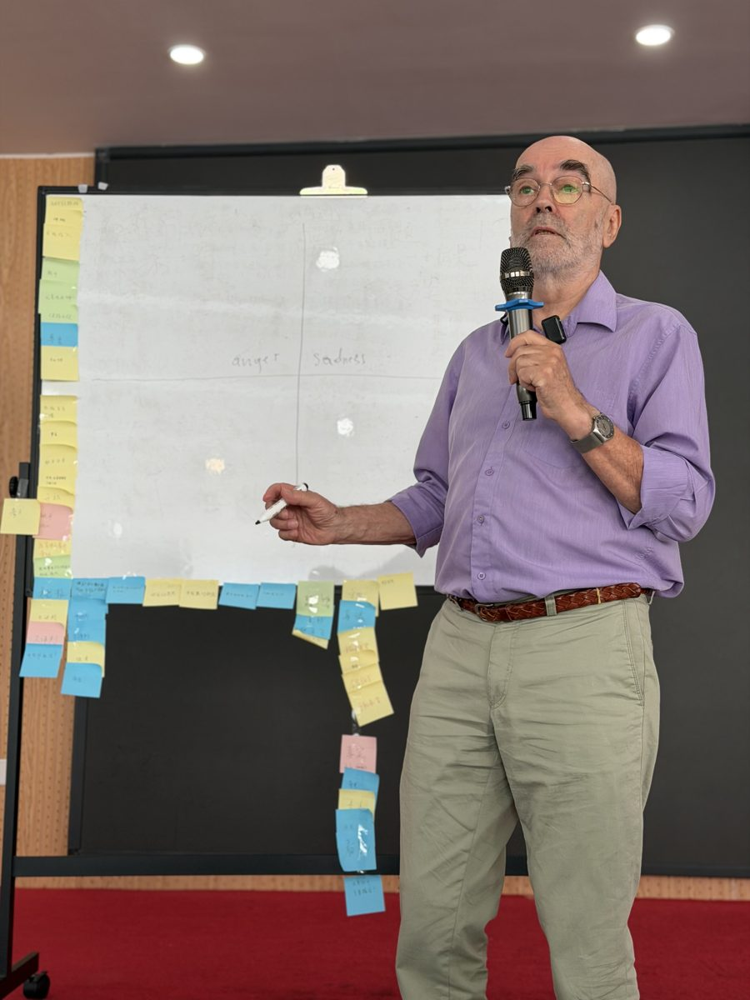

Rencontre et confiance
Créer un cadre propice à l'expression et à l'exploration grâce à l'accueil, aux règles partagées et aux exercices coopératifs.
EMOTIONAL INTELLIGENCE / LEVEL I
Pékin, du 11 au 16 août 2026. Six jours d'apprentissage expérientiel, de la conscience émotionnelle et de la communication à la conception et à l'animation d'activités.
LEARNING BY EXPERIENCE
L'éducation à l'intelligence émotionnelle ne se limite pas aux concepts. Dans la formation de Michel, les participants écoutent, s'expriment, coopèrent et échangent des retours, tout en observant la structure des activités et la manière dont l'animateur répond au groupe. L'expérience personnelle et la conception pédagogique avancent ensemble.
La formation de Pékin en 2026 est terminée. Les thèmes abordés et les scènes de classe ci-dessous retracent son parcours pédagogique.
 BEIJING · AUGUST 2026
BEIJING · AUGUST 2026SIX DAYS IN BEIJING
Chaque journée associe expérience personnelle, observation pédagogique et bilan.
Créer un cadre propice à l'expression et à l'exploration grâce à l'accueil, aux règles partagées et aux exercices coopératifs.
S'exercer à écouter, questionner et répondre ; observer comment la communication influence les choix et les relations.
Partir des réactions corporelles et du quotidien pour reconnaître les émotions et exprimer clairement ses ressentis.
Découvrir ses ressources grâce aux retours des pairs et explorer comment les expériences du groupe peuvent se soutenir mutuellement.
Explorer la coopération et les désaccords en petit groupe, et inscrire la conscience de soi dans des relations réelles.
En passant de l'apprentissage à l'animation, les participants définissent les objectifs, le déroulement et le bilan de leur propre atelier.
THE LEARNING ARC
La formation relie les compétences émotionnelles personnelles à l'animation de groupes. Les participants commencent par observer leur propre expérience, puis apprennent à comprendre les autres et à coopérer, avant de concevoir des activités permettant à d'autres d'apprendre.
INSIDE THE CLASSROOM
De l'enseignement de Michel aux exercices collectifs, découvrez comment la méthode prend forme en classe.


FROM CLASS TO PRACTICE
Lors du niveau II de novembre à Pékin, les participants ont transformé leur expérience du niveau I en ateliers thématiques : concevoir, animer, observer le groupe et recevoir des retours. La formation s'est ainsi prolongée par un apprentissage entre pairs.
Découvrir le réseau Essence des formateurs en intelligence émotionnelle ↗